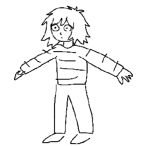
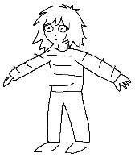

Music Bin
Some music sits in the corner, remaining unfinished for a long time. Some music represents a spark of an idea that is unexplored. Some music is finished, but deemed too old for the main page, or I no longer like it.
Go back

"unthink melody remxi thing" remix - May 26th, 2026
I tried to complete Murumart's doodle, but it turned out nothing like I intended, instead becoming a techno thing.
my walk
I had a big grand idea for a song that samples a 10 minute walk I recorded, which would add texture. I didn't do much with this because my computer would explode. Ignore the terrible bit at the end.
Slow
Another "my computer is exploding so I can't finish this" song. The guitar was an improvised jam, and it is incredibly off-beat, so I made the drum equally off. I liked it when I made it. Unfinished.
Toy Orchestra
This was fun to make. I recorded everything in it (except the cello, that was my neighbor) with no mindfulness whatsoever of every other track, because each track was recorded with the intention to sample the "hits" individually and then mess with the rest, but when I laid everything together, it turned out pretty cool. There are two versions, one where everything was just thrown together and handled by Bitwig, and another with some manual arrangement. I only included the first one because it sounded better.
